IP Camera¶
Overview¶
Cameras and video doorbells are unique in that the HomeKit Accessory Protocol is used for setting up the video (and audio) streams for such an accessory, but the actual communication is done via standard protocols like SRTP and using standard data formats like H.264. In essence, a HomeKit service is used to configure, start and stop SRTP streams that are otherwise completely independent of HomeKit.
Compile¶
You must have all the prerequisites for your development platform to compile the ADK. Once all the prerequisites are installed for your platform, run the following to compile ADK sample camera applications:
make TARGET=Darwin APPS="IPCamera IPCameraEventRecorder"
make TARGET=Linux APPS="IPCamera IPCameraEventRecorder"
make TARGET=Raspi APPS="IPCamera IPCameraEventRecorder"
Warning
This feature is currently not supported on this platform.
Run¶
Please follow instructions at Running an ADK Application to run an ADK sample application.
Camera Streaming¶
Here is an overview of the data flow within an IP camera:
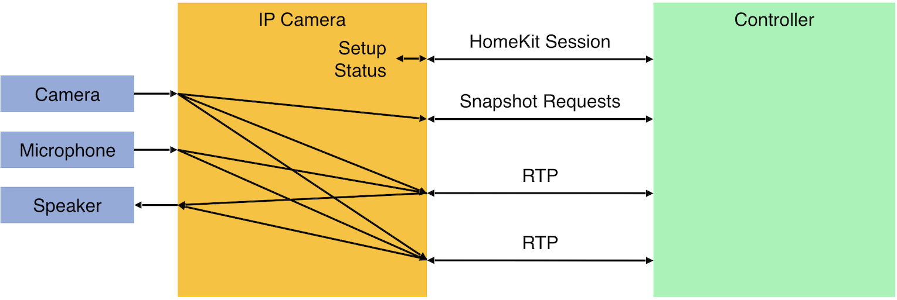
Implementation Details¶
Supporting IP camera functionality in a HomeKit accessory consists of two tasks:
Handle the HomeKit part of the communication, e.g., to obtain information from the HomeKit controller about the desired video resolution for the video stream. This task mainly requires HomeKit know-how. A complete implementation is provided in
ADK/Applications/IPCamera. Change its configuration part to reflect the properties of the camera accessory.Implement what is called the A/V pipeline, which for video means capturing video frames from the camera, encoding them into H.264, and streaming the result using the SRTP protocol via a UDP socket to the HomeKit controller. For audio it means capturing audio data from the microphone, encoding it using one of the permitted audio formats (Opus or AAC-ELD), and streaming it using the SRTP protocol via another UDP socket to the HomeKit controller. In addition, there is an audio pipeline for decoding received audio data and forwarding it to a speaker. This task mainly requires A/V know-how and experience with the special video processors that are typically used. The result is an implementation of the HAPPlatformCamera PAL API (see IP Camera), plus the setup of whatever additional system software is needed.
Requirements¶
IP cameras need megabytes of RAM and considerable processing power. Use of dedicated video processing hardware is recommended. The hardware must support the following video requirements:
Codec: H.264, main profile, level 4
Resolution: Please read the HomeKit Accessory Protocol Specification for the complete list of supported resolutions.
Support for at least two parallel streams: one must support at least 1080p@30, the others at least 720p@30.
In addition, support for JPEG-encoded snapshots.
On-the-fly reconfiguration of the video streams (resolution and bitrate).
The hardware must support the following audio requirements:
Codec: AAC-ELD or Opus, variable bit rate mode
Sample rate: 16k or 24k samples per second
The RTP timestamp frequency must be equal to the sample frequency, even for Opus
The chipset-specific drivers must also support these requirements. Typically, the chipset vendor needs to supply software that acquires the raw data from camera and microphone and encodes it into the standard formats mentioned above. This task is performance-critical. Even if a processor with its GPU may have enough raw horsepower to meet all HomeKit requirements, the available software may not be sufficient. For example, on a Raspberry Pi, the programs raspivid and raspistill appear to monopolize the GPU and only support one stream at the time. For this reason, the camera sample in the ADK’s POSIX PAL uses lower-level APIs in order to meet the minimal HomeKit requirements on that hardware. For more information, see the HomeKit Accessory Protocol Specification.
Note
H.264 and AAC-ELD require licenses, which may be included with processors that provide special hardware support for these standards. It is the licensee’s responsibility to ensure that valid licenses are available
Once the incoming data is in the correct format, in can be forwarded to another component that performs streaming over IP. This software must meet the following requirements:
Protocol: SRTP with AES_CM_128_HMAC_SHA1_80 and AES_256_CM_HMAC_SHA1_80
RTP and RTCP packets multiplexed on same port
Separate ports for audio and video
RTCP must support extended feedback and codec control including PLI, FIR, TMMB and TST messages
HAP Implementation¶
In the ADK, HomeKit support for cameras relies on the small number of streaming operations in HAPPlatformCamera.h that must be implemented in some way. Implementation of this PAL module is not trivial. There are mainly two ways how this PAL API, which is completely platform-independent can be implemented:
PAL Implementation¶
HAPPlatformCamera is completely implemented by licensee, in whatever way that is suitable for the target platform. Typically, some existing A/V library is used, such as GStreamer (https://gstreamer.freedesktop.org) or FFmpeg (https://www.ffmpeg.org). In principle, this approach can allow getting something up and running quickly and easily. In practice, if there are problems or the library does not implement exactly what is needed - or does not provide the performance needed - it can become very difficult to find and fix issues, and the system may never get into a state where it runs fully reliably or may not fully meet the HomeKit requirements. So, this approach should only be considered by licensees that have extensive experience in using their A/V library on their target platform, and have the necessary in-depth knowledge to analyze and fix any issues that it may have.
HAPPlatformCamera calls the ADK’s own implementation of RTP, called as HAP-RTP. Apple’s HAP-RTP is a stable,
efficient, and light-weight protocol implementation of RTP, RTCP and SRTP that meets the HomeKit specifications.
Technically, this implementation is shipped as part of the HAP Library. Logically, it is independent of HomeKit and thus
only very loosely coupled with the rest of the HAP Library. It does not need to adapted to a target platform. The
HAP-RTP introduces and uses the following PAL APIs: CameraInput, Microphone and Speaker. A licensee only needs
to implement these far simpler helper APIs. If the target platform uses Linux, the sample implementations of the
Microphone and Speaker modules for the Raspberry Pi can typically be reused with minimal changes only. This approach
is recommended for most licensees and is described in more detail in the following section of this guide.
IP Camera for Raspberry Pi¶
The camera input PAL module in ADK/PAL/POSIX/HAPPlatformCameraInput.c implements the following video pipeline:
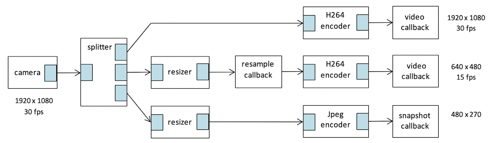
The figure below shows the dependencies of the main APIs (.h files) and their implementation (.c files):
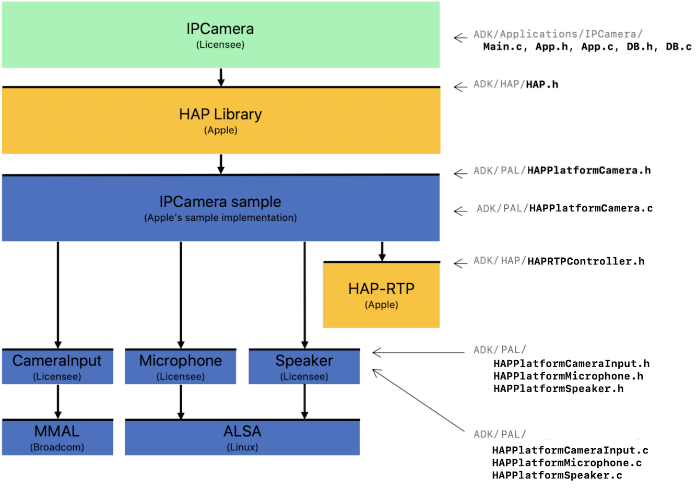
The interface HAPPlatformCamera.h of the camera PAL module must be implemented as defined by the ADK. It controls the A/V streams of the accessory. More information on how to implement this PAL module or to adapt the sample implementation is given below.
ADK/Common/Helper/CameraHelper.cuses theHAPPlatformCamera+Init.hinterface to initialize the PAL (not shown above). This interface can be defined by the platform developer as needed for the specific PAL implementation.The sample code in
HAPPlatformCamera.ccan be largely reused, i.e., it typically requires few modifications for porting from a Raspberry Pi to a different POSIX system. This portability is made possible by the introduction of helper APIs for camera input, microphone input, and speaker output.The main interfaces of the CameraInput, Microphone and Speaker PAL modules are portable. The initialization of these modules may use platform-specific constructs, i.e. the
HAPPlatformCameraInput+Init.h,HAPPlatformMicrophone+Init.h, andHAPPlatformSpeaker+Init.hinterfaces (not shown above) can be defined by the platform developer as needed for the specific PAL implementation.During development, the helper files
HAPPlatformLog+Camera.h/.care useful for diagnosing the data being streamed by the sample. Normally, only the most important RTP-related information is logged: key frames, errors and statistics. For debugging camera-related issues, more extensive logging can be switched on by setting variable logVideoRTP inHAPPlatformLog.cto true. The format of these packet log lines is documented in the header ofHAPPlatformLog+Camera.c. The main parts of the video packet log lines are:
[<id>] h264: <sequence number>, <time stamp>, <nri>, <NAL-type>
Plus additional fields for fragmented and aggregated packets.Similarly, there is a variable logAudioRTP in the same header file for the audio data stream that is also set to false by default. The format of the audio packet log lines is:
[<id>] audio: <sequence number>, <time stamp>
Porting to a target platform requires the following tasks:
If the target platform supports the Broadcom MMAL (Multimedia Abstraction Layer) API, the sample
HAPCameraInputimplementation (ADK/PAL/POSIX/HAPPlatformCameraInput.c) can be largely reused. For other video APIs,HAPCameraInput+init.handHAPCameraInput.cwill require modifications that are platform-specific.If the target platform supports the Linux ALSA (Advanced Linux Sound Architecture) API, the sample Microphone (
ADK/PAL/POSIX/HAPPlatformMicrophone.c) and Speaker (ADK/PAL/POSIX/HAPPlatformSpeaker.c) implementations can be largely reused. For other audio APIs,HAPPlatformMicrophone+Init.h/HAPPlatformMicrophone.candHAPPlatformSpeaker+Init.h/HAPPlatformSpeaker.cwill require modifications that are platform-specific.If the target platform supports POSIX, the camera sample implementations of UDP sockets can be largely reused. Other socket APIs will require modifications that are platform-specific.
Supporting AAC-ELD¶
The ADK supports all audio codecs permitted by the HomeKit specification. The camera sample uses Opus. To change the sample from Opus to AAC-ELD you have to make the following changes:
Change the codec type in the Supported Audio Configuration in
App.cfromkHAPAudioCodecType_OpustokHAPAudioCodecType_AAC_ELD.Provide audio input and output PALs similar to
HAPPlatformMicrophone.candHAPPlatformSpeaker.csupporting AAC instead of Opus.In
HAPPlatformCamera.HAPPlatformCameraStartStreamingSession():Change the assertion
if (streamConfiguration->audio.codecType != kHAPAudioCodecType_Opus)
to
if (streamConfiguration->audio.codecType != kHAPAudioCodecType_AAC_ELD)
Call your function to start the AAC input stream instead of
HAPPlatformMicrophoneStartOpusStream().Call your function to start the AAC output stream instead of
HAPPlatformSpeakerStartOpusStream().NOTE: No changes to the RTP and UDP handling are needed.
Coexistence with non-HomeKit A/V streams¶
A HomeKit camera may also support other, non-HomeKit controllers. This section contains information on how to implement the camera PAL for enabling coexistence between audio/video streams that are used for HomeKit, and others:
HAPPlatformCameraTrySetStreamStatusis called by HAP-RTP as soon as a stream should be reserved for HomeKit (i.e., Setup Endpoints request is received by the accessory), whereasHAPPlatformCameraStartStreamingSessionis called when streaming on the reserved stream should be started. The HAP Library will only transition from stream status Available to In Use and back.You need to call
HAPPlatformCameraStartStreamingSessionon your own in these cases:You want to end a HomeKit stream before having received an EndStreamingSession command. This scenario occurs for example when there is an RTP timeout. In this case, the platform would transition from In Use to Available autonomously and report to the HAP Library that this change has occurred.
You want to use a non-HomeKit method for streaming, in which case you have to transition from Available to Unavailable. While Unavailable, the HAP Library will not attempt to set the stream as In Use and will report a different error message to the user. When the stream is available again, you have to transition back from Unavailable to Available.
Notably, you never have to manually transition from Available to In Use, this transition is only made by the HAP Library.
Camera Event Recording¶
The Camera Event Recording extension adds the ability to record and transfer video sequences. Recording is triggered either by a door bell or by a motion detector. In addition, the HomeKit controller may start a recording, without a trigger event on the accessory. When not active, the recorder continuously stores data to a prerecording buffer, in order to be able to provide a few seconds of video prior to the trigger event. After recording is started, the recorder encodes the prerecording buffer and any further incoming video and audio as a fragmented MP4 stream and sends it to the controller using a HomeKit Data Stream.
The recorder extension adds several new HomeKit services and characteristics to the baseline IP Camera profile. In particular, the Camera Event Recording Management service is used to query and configure the various recording parameters, and the Camera Operating Mode service is used to enable or disable individual features.
On the audio/video pipeline side, there are two main differences to a baseline camera:
AAC-LC or AAC-ELD (https://en.wikipedia.org/wiki/Advanced_Audio_Coding) are used for audio encoding.
Instead of RTP, the recorder encodes the audio/video data as a fragmented MP4 stream and transfers it using the HomeKit DataStream (HDS) protocol.
Here an overview of the data flow within an IP camera with the Camera Event Recording extension:
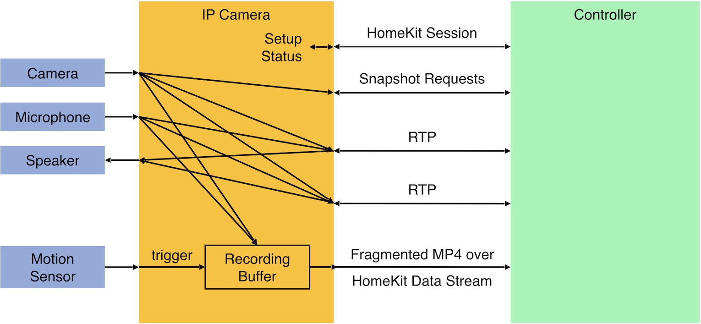
A recorder is always in one of the following states:
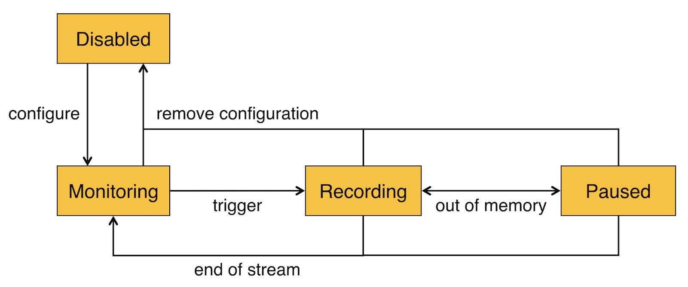
In the above diagram, the transition from Recording to Paused happens when out of memory, from Paused to Recording when memory has become available again.
Implementation Details¶
Requirements¶
Besides the two video streams required already for the baseline camera, support for a third video stream with 1080p and at least 24 frames per second is needed in principle. However, the specification allows using only two streams (1080p and 720p) in total for both live streaming and recording. Additional logic is needed in this case to prevent the user from starting a third stream.
The prerecording buffer must be able to store at least four seconds of data. The recording buffer used after receiving the recording trigger must be able to store at least eight seconds of data. A single circular buffer of appropriate size can be used for storing both the prerecording and the recording data.
Note: It is the responsibility of a licensee to obtain the necessary encoder license for AAC encoding. It may come as part of the hardware being used.
PAL Implementation¶
In addition to the code used for the baseline camera, a recorder must implement the part of the HAPPlatformCamera.h interface related to recording. Similar to the baseline camera, the licensee is free to use its own implementation or to reuse the code provided as part of the Raspberry Pi IPCameraEventRecorder sample.
This diagram shows the dependencies of the main APIs (.h files) and their implementation (.c files):
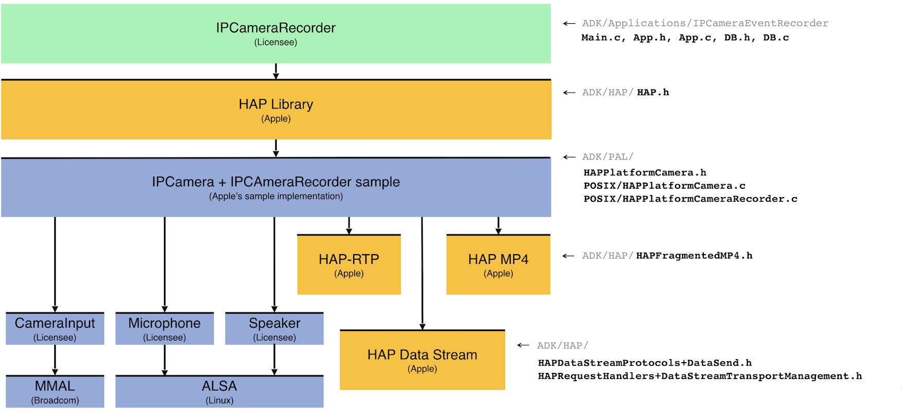
The recorder sample implements the additional functions in ADK/PAL/Raspi/HAPPlatformCameraRecorder.c. The sample uses
the same PAL modules for video and audio input as the camera sample: HAPPlatformCameraInput and
HAPPlatformMicrophone. The AppBase.c uses the HAPPlatformCameraRecorder+Init.h interface for initializing the PAL.
This interface can be defined by the platform developer as needed for the specific PAL implementation. The recorder
sample code can be largely reused. The only POSIX dependency is the usage of the pthread_mutex_t type and the
corresponding synchronization function calls.
A battery-driven camera recorder may be implemented with no prerecording. Some changes are needed in the state
transitions of such a recorder because there is no need for the camera input streams to run continuously if no
prerecording takes place. HAPPlatformCameraBatteryRecorder.c can be used instead of the HAPPlatformCameraRecorder.c
in this case.
Implement a Camera Event Recording Store¶
The sample implementation in HAPPlatformCameraRecorder.c implements the recorder store as a single circular buffer
(queue) used for both prerecording and recording. During prerecording all outdated data (data older than the
prerecording duration) is immediately discarded. During recording the queue space is fully used to store as much video
data as possible.
Properly encoded and interleaved video and audio data is stored in the buffer. For proper interleaving two additional small queues are used to synchronize the video and audio streams to each other.
The following diagrams show the structure of the sample recorder store:
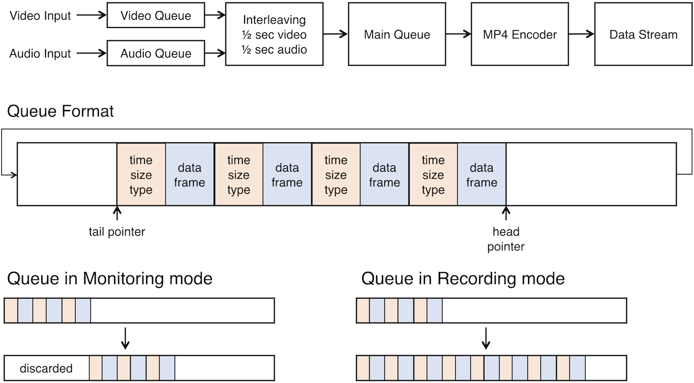
How to map recordings to HomeKit Data Stream dataSend operations:The Fragmented MP4 standard (ISO/IEC 14496-12, RFC8216) is used for representing HomeKit recordings. A recording consists of a header and a sequence of fragments. For HomeKit, a fragment must contain a multiplexed and interleaved sequence of video and audio runs. The size of a run is at most 0.5 seconds. The length of a whole fragment is given by the controller-specified Fragment Duration.
HAP Implementation¶
The ADK’s MP4 encoder (HAPFragmentedMP4.h) may be used for properly packing the encoded video and audio into the
Fragmented MP4 container.
The following diagram shows the structure of a fragmented MP4 file:
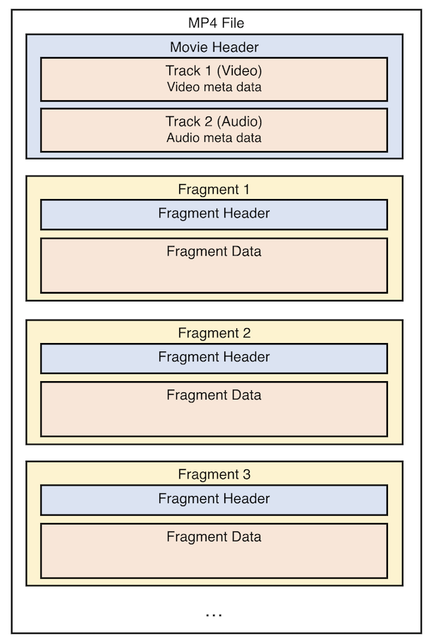
The following diagram shows how corresponding video and audio runs are placed in sequence within a fragment, e.g., from time stamp 0.5 to 1.0 seconds:
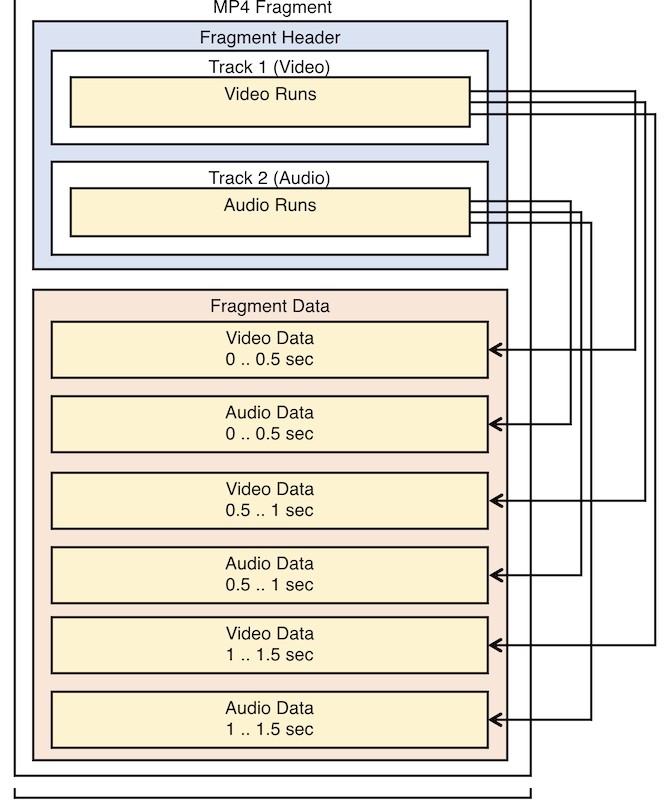
For sending such a recording to a HomeKit controller, it must be mapped to the HomeKit Data Stream (HDS) dataSend
protocol. The HAP API provides the functions HAPDataStreamDispatcherCreate, HAPDataSendDataStreamProtocolAccept and
HAPDataSendDataStreamProtocolReject for setting up a stream, and HAPDataSendDataStreamProtocolSendData and
HAPDataSendDataStreamProtocolCancel for sending data and stream termination. See HAPDataStreamProtocols+DataSend.h
for details.
Most of the activity is done in the callback functions HandleDataSendStreamAvailable, HandleDataSendStreamOpen,
HandleDataSendStreamClose, and HandleSendDataComplete called by the HomeKit Data Stream dispatcher.
The following diagram shows the important events and calls during a recorder stream:
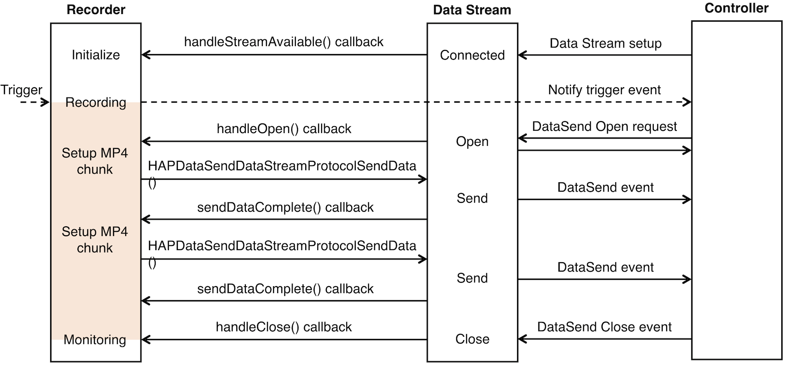
HAPDataSendDataStreamProtocolSendData takes a list of packets as parameters, and sends the data contained in these
packets. A packet (type HAPDataSendDataStreamProtocolPacket) contains data, a so-called chunk, plus some metadata
about this chunk, in particular its sequence number (field dataChunkSequenceNumber). A chunk can contain a small portion
of a fragment, a full fragment, or multiple fragments. The total size of all packets to be sent in one dataSend
operation including metadata and protocol headers must be less than 1 MB, but is usually much smaller.
The following diagram shows the relation between the MP4 fragments and the data stream packets:The data stream packets on the right side include the dataType string and the two sequence numbers: the dataSequenceNumber which is always 0 for the header and fragment number + 1 for the fragments and the dataChunkSequenceNumber which enumerates the chunks belonging to one fragment.
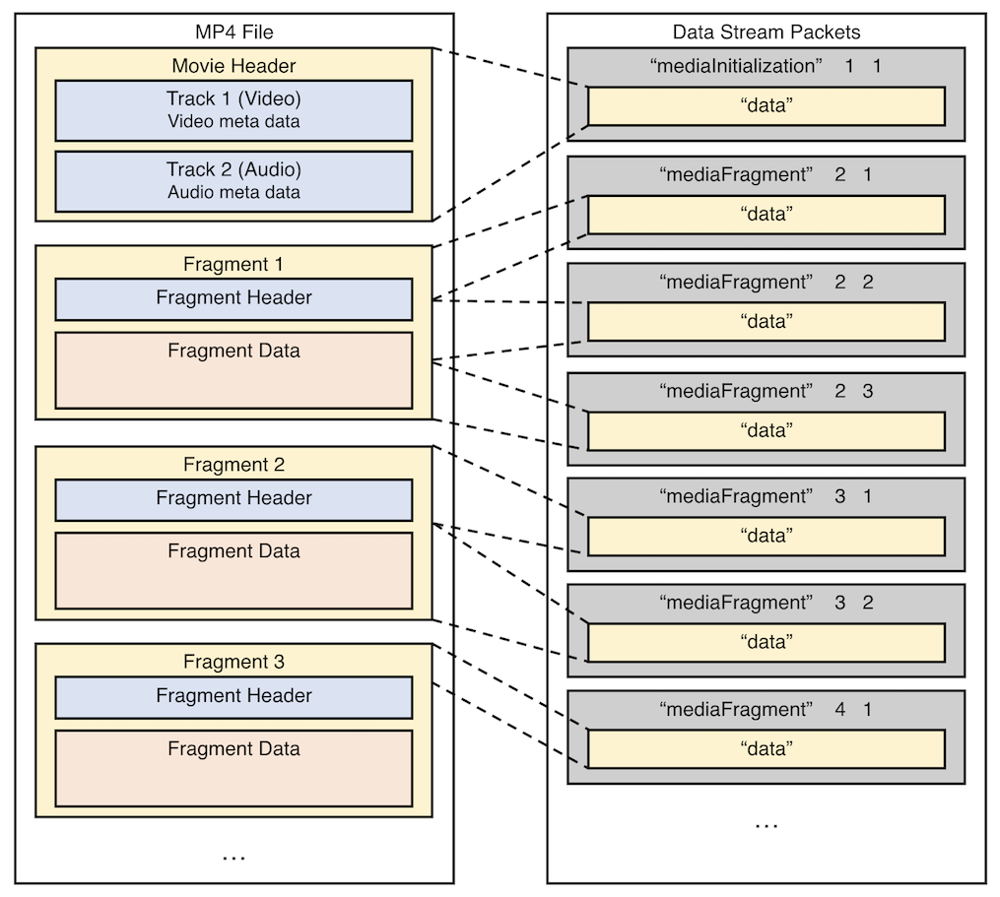